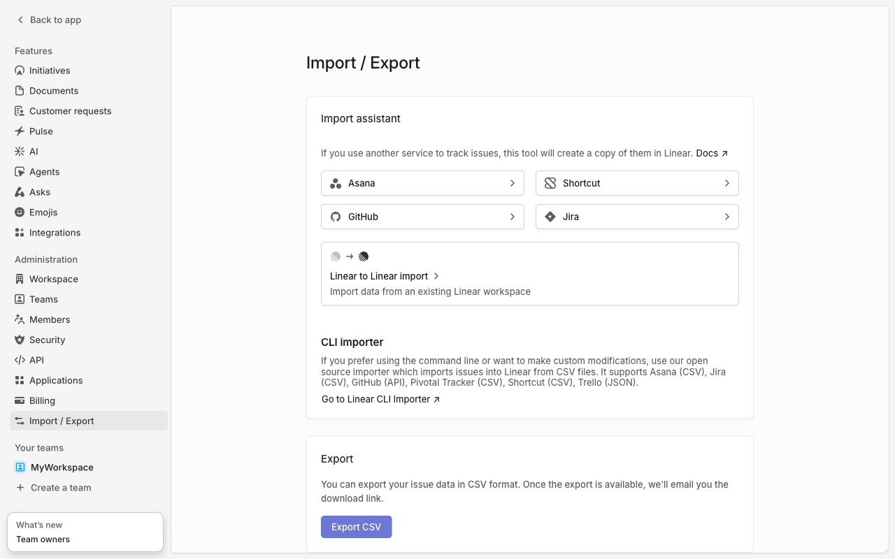
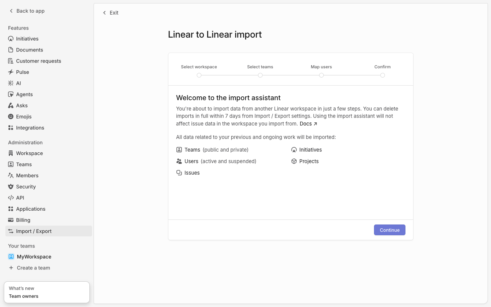

🧠 How This Automation Works
This report shows the step-by-step execution of an AI-powered browser automation system. Two AI agents work together to complete your task:
- Planner Agent GPT-4 - Creates a strategic plan by breaking down your task into logical steps (navigate, login, interact, verify).
- Vision Agent GPT-4 Vision - Analyzes screenshots in real-time to decide which buttons to click, forms to fill, and actions to take.
The Process: The Planner creates the initial roadmap, then the Vision Agent looks at each screenshot and decides the best action to move forward. If the plan doesn't work perfectly, the Vision Agent adapts and explores alternative paths to complete your task.

What the AI sees: 1. The screen displays the "Import / Export" section of the Linear app, featuring options for importing data from various services like Asana, GitHub, and Jira, as well as a CLI importer section. Additionally, there's an option to export issue data in CSV format with a prominent "Export CSV" button.
2. The page is in a state ready for either importing or exporting data. No specific action has been taken yet, as described by "N/A" in the action taken field.
3. Next, the user can choose to either import data by selecting one of the import options or click the "Export CSV" button to export data. The export process will generate a CSV file, and the user will receive a download link via email once the export is complete.
The user navigated from the import-export settings page to the 'active' team view within their workspace on Linear, indicating a transition from settings management to active team task management.

What the AI sees: 1. The screen displays a "Linear to Linear import" interface, which includes a progress tracker with steps like Select workspace, Select teams, Map users, and Confirm. The main section has a welcome message from the import assistant explaining the import process and listing items like Teams, Users, Issues, Initiatives, and Projects.
2. The user has taken action that deviates from the expected step of clicking the 'New Project' button by opting to click "Back to app." This suggests a navigation move away from the current import setup process.
3. Following this action, it is likely the user will be redirected back to the main application interface or dashboard, interrupting the current import process and possibly requiring them to restart it if they wish to continue later.
Upon clicking 'Back to app', the user was redirected from the team-specific active tasks page to a broader projects overview page, preparing them to click on the 'New Project' button for creating a new project.
What the AI sees: 1. The screen displays a project management interface with sections for "Inbox," "My issues," "Projects," and "Views" in the left sidebar. The main panel shows a list of to-do items under "MyWorkspace," each with identifiers like "MYW-1" and corresponding titles.
2. The current state is within the "Projects" view, as indicated by the sidebar selection, allowing users to manage project-related tasks.
3. Next, you should expect to enter details for a new project. Typically, this would involve filling out fields in a form for specific project information such as "Project Name" and "Description."
Upon clicking on 'Projects', the interface transitioned to a detailed input form for creating a new project, allowing the user to input fields such as 'Project Name' and 'Description,' without a change in the URL.
What the AI sees: 1. The screen displays a project management interface with navigation options on the left, including "My issues" and "Projects". In the main area, there's a section titled "Projects" with a brief description and two buttons labeled "Create new project" and "Documentation".
2. The action taken is a click on the "Create new project" button, indicating the intention to initiate the creation of a new project within the workspace.
3. Next, you can expect a form or modal to appear prompting you to enter details about the new project, such as the project name, description, and any additional settings required to set it up.
Upon clicking 'Create new project,' a new project entry form appeared within the same page, enabling users to input and submit necessary project information without changing the URL.
What the AI sees: 1. The screen displays the "New project" dialog in the Linear app, showing fields for entering a project name, a summary, and additional details like backlog, priority, and labels. The left sidebar lists workspace navigation options like Inbox, Issues, and Projects.
2. The current state shows that no action has been taken to input a project name, as indicated by the error message "Project name required" at the bottom right corner, stating the project name cannot be empty.
3. The next step is to enter a valid project name in the provided field to continue with project creation. Once a name is entered, the error should clear, allowing further configuration or saving of the project.